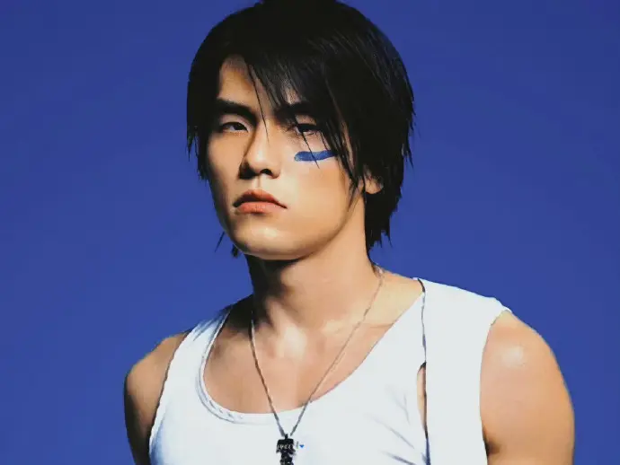

周杰伦
周杰伦 英文名Jay Chou，1979年1月18日出生于台湾省新北市，
祖籍福建省泉州市永春县，中国台湾流行乐男歌手、音乐人、演员、导演、编剧，
毕业于淡江中学。
重要事件
- 2000年发行首张个人专辑《Jay》。
- 2001年发的专辑《范特西》奠定其融合中西方音乐的风格。
- 2002年举行“The One”世界巡回演唱会。
- 2003年成为美国《时代周刊》封面人物。
- 2004年获得世界音乐大奖中国区最畅销艺人奖。
- 2005年凭借动作片《头文字D》获得金马奖、金像奖最佳新人奖。
- 2006年起连续三年获得世界音乐大奖中国区最畅销艺人奖。
- 2007年自编自导的文艺片《不能说的秘密》获得金马奖年度台湾杰出电影奖 。
- 2008年凭借歌曲《青花瓷》获得第19届金曲奖最佳作曲人奖。
- 2009年入选美国CNN评出的“25位亚洲最具影响力人物” ，同年凭借专辑《魔杰座》获得第20届金曲奖最佳国语男歌手奖 。
- 2010年入选美国《FastCompany》评出的“全球百大创意人物”。
- 2011年凭借专辑《跨时代》再度获得金曲奖最佳国语男歌手奖，并且第四次获得金曲奖最佳国语专辑奖；同年主演好莱坞电影《青蜂侠》。
- 2012年登福布斯中国名人榜榜首
- 2014年发行华语乐坛首张数字音乐专辑《哎呦，不错哦》。
- 2021年在央视春晚演唱歌曲《Mojito》 。
成就和荣誉
- 第20届台湾金曲奖
- 年度最佳歌曲奖——周杰伦《稻香》
- 年度最佳音乐录影带——周杰伦《魔术先生》
- 年度最佳国语男歌手——周杰伦
- Hit FM联播网「2009 HITO流行音乐奖」
- 最佳男歌手----周杰伦「魔杰座」
- 最佳创作歌手----周杰伦「魔杰座」
- 年度十大华语金曲----稻香「魔杰座」
- 中华音乐人交流协会
- 08年十大唱片——魔杰座
- 08年十大单曲——魔术先生
- TOP榜2009
主要作品
| 年份 |
专辑名 |
| 2001年 |
范特西 |
| 2002年 |
八度空间 |
| 2000年 |
Jay |
| 2003年 |
叶惠美 |
| 2004年 |
七里香 |
| 2005年 |
11月的肖邦 |
| 2006年 |
依然范特西 |
| 2007年 |
我很忙 |
| 2008年 |
魔杰座 |
| 2010年 |
跨时代 |
| 2011年 |
惊叹号 |
| 2012年 |
12新作 |
| 2014年 |
哎呦，不错哦 |
| 2016年 |
周杰伦的床边故事 |
生活照

生平